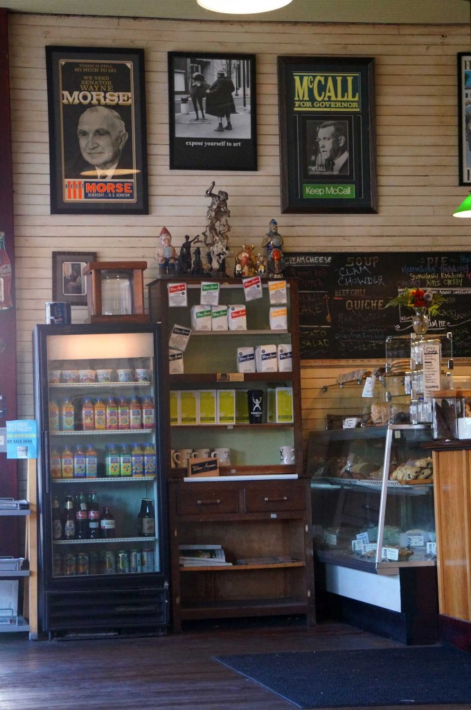

Our story
A café where everybody gets along.
Peter and Hobie opened Bipartisan Café in 2005 with a simple idea: a warm room where neighbors — no matter how they vote — can share a table, a pot of coffee, and a really good slice of pie.
The walls tell America's story in pictures, the flattering and the unflattering alike, so we never forget where we've been. We've grown from three folks to more than twenty, but the heart of the place hasn't changed.
It's still the spot Portlanders come to slow down, talk it out, and feel right at home.
— Peter & Hobie